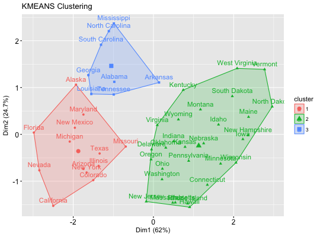
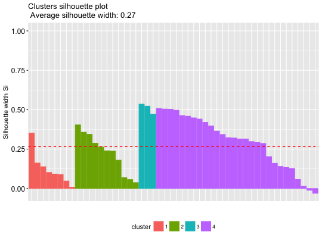

Provides solution for enhancing the workflow of clustering analyses and ggplot2-based elegant data visualization. Read more: http://www.sthda.com/english/wiki/visual-enhancement-of-clustering-analysis-unsupervised-machine-learning.
eclust(x, FUNcluster = c("kmeans", "pam", "clara", "fanny", "hclust", "agnes", "diana"), k = NULL, k.max = 10, stand = FALSE, graph = TRUE, hc_metric = "euclidean", hc_method = "ward.D2", gap_maxSE = list(method = "firstSEmax", SE.factor = 1), nboot = 100, verbose = interactive(), seed = 123, ...)
Returns an object of class "eclust" containing the result of the standard function used (e.g., kmeans, pam, hclust, agnes, diana, etc.).
It includes also:
fviz_silhouette, fviz_dend,
fviz_cluster
# Load and scale data data("USArrests") df <- scale(USArrests) # Enhanced k-means clustering # nboot >= 500 is recommended res.km <- eclust(df, "kmeans", nboot = 2)#> Clustering k = 1,2,..., K.max (= 10): .. done #> Bootstrapping, b = 1,2,..., B (= 2) [one "." per sample]: #> .. 2#> cluster size ave.sil.width #> 1 1 30 0.43 #> 2 2 20 0.37# Optimal number of clusters using gap statistics res.km$nbclust#> [1] 2# Print result res.km#> K-means clustering with 2 clusters of sizes 30, 20 #> #> Cluster means: #> Murder Assault UrbanPop Rape #> 1 -0.669956 -0.6758849 -0.1317235 -0.5646433 #> 2 1.004934 1.0138274 0.1975853 0.8469650 #> #> Clustering vector: #> Alabama Alaska Arizona Arkansas California #> 2 2 2 1 2 #> Colorado Connecticut Delaware Florida Georgia #> 2 1 1 2 2 #> Hawaii Idaho Illinois Indiana Iowa #> 1 1 2 1 1 #> Kansas Kentucky Louisiana Maine Maryland #> 1 1 2 1 2 #> Massachusetts Michigan Minnesota Mississippi Missouri #> 1 2 1 2 2 #> Montana Nebraska Nevada New Hampshire New Jersey #> 1 1 2 1 1 #> New Mexico New York North Carolina North Dakota Ohio #> 2 2 2 1 1 #> Oklahoma Oregon Pennsylvania Rhode Island South Carolina #> 1 1 1 1 2 #> South Dakota Tennessee Texas Utah Vermont #> 1 2 2 1 1 #> Virginia Washington West Virginia Wisconsin Wyoming #> 1 1 1 1 1 #> #> Within cluster sum of squares by cluster: #> [1] 56.11445 46.74796 #> (between_SS / total_SS = 47.5 %) #> #> Available components: #> #> [1] "cluster" "centers" "totss" "withinss" "tot.withinss" #> [6] "betweenss" "size" "iter" "ifault" "clust_plot" #> [11] "silinfo" "nbclust" "data" "gap_stat"## Not run: ------------------------------------ # # Enhanced hierarchical clustering # res.hc <- eclust(df, "hclust", nboot = 2) # compute hclust # fviz_dend(res.hc) # dendrogam # fviz_silhouette(res.hc) # silhouette plot ## ---------------------------------------------